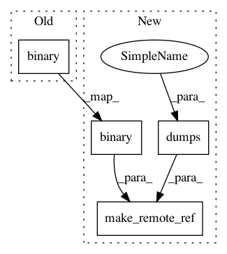

b7f246c4516fa726c6f7ae8b5d1dac206cdb77d5,python/ray/experimental/client/server/server.py,RayletServicer,WaitObject,#RayletServicer#Any#Any#,46
Before Change
logger.info("wait: %s %s" % (str(ready_object_refs),
str(remaining_object_refs)))
ready_object_ids = [
ready_object_ref.binary() for ready_object_ref in ready_object_refs
]
remaining_object_ids = [
remaining_object_ref.binary()
After Change
logger.info("wait: %s %s" % (str(ready_object_refs),
str(remaining_object_refs)))
ready_object_ids = [
make_remote_ref(
id=ready_object_ref.binary(),
handle=cloudpickle.dumps(ready_object_ref),
) for ready_object_ref in ready_object_refs
]
remaining_object_ids = [
make_remote_ref(
In pattern: SUPERPATTERN
Frequency: 3
Non-data size: 4
Instances
Project Name: ray-project/ray
Commit Name: b7f246c4516fa726c6f7ae8b5d1dac206cdb77d5
Time: 2020-12-10
Author: me@barakmich.com
File Name: python/ray/experimental/client/server/server.py
Class Name: RayletServicer
Method Name: WaitObject
Project Name: ray-project/ray
Commit Name: b7f246c4516fa726c6f7ae8b5d1dac206cdb77d5
Time: 2020-12-10
Author: me@barakmich.com
File Name: python/ray/experimental/client/server/server.py
Class Name: RayletServicer
Method Name: PutObject
Project Name: ray-project/ray
Commit Name: b7f246c4516fa726c6f7ae8b5d1dac206cdb77d5
Time: 2020-12-10
Author: me@barakmich.com
File Name: python/ray/experimental/client/server/server.py
Class Name: RayletServicer
Method Name: _schedule_method